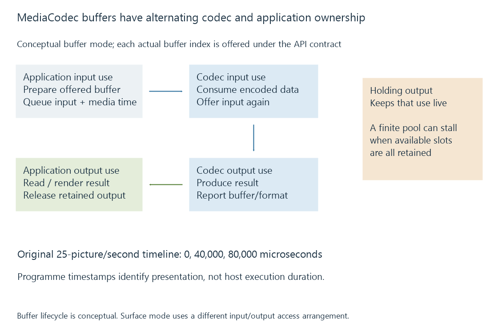

Android MediaCodec and buffer ownership
MediaCodec exposes Android codec components through configured input/output buffers or surfaces whose ownership, timing and state determine how media is processed.
MediaCodec is Android's interface to codec components. An application selects and configures a decoder or encoder, supplies its inputs and handles its outputs through the component's supported buffer or surface arrangement.
The interface can expose hardware-accelerated and software implementations. Its name alone does not identify the selected component.
Select the operation and configuration
The application needs an appropriate component for the media type and operation. Decoder and encoder selection are separate questions.
MediaCodecInfo describes properties including supported types and, on applicable API versions, whether a component reports hardware acceleration or software-only operation. The declared hardware attribute comes from the device implementation; observed processing supplies another kind of evidence.
A selected HEVC decoder still needs support for the actual profile, dimensions, sample format and other required features. An Android Emby player and an Android-hosted server can request different media work through that platform.
Buffer ownership lets the codec make progress
The application obtains an available input buffer, fills it with valid encoded data or picture input as appropriate, then returns it to the codec through its queueing contract.
Output availability establishes another ownership stage. After processing or rendering the output, the application releases the output buffer back to the component.

| Event | Permission or progress |
|---|---|
| Input buffer becomes available | Application may prepare that offered buffer |
| Input is queued | Codec may consume it |
| Output becomes available | Application can handle the reported output |
| Output is released | Its retained use can end under the contract |
Android's documentation warns that holding buffers can stall component progress. An empty output queue and a pool exhausted by retained outputs are different states.
Surface-based paths avoid treating every result as an ordinary CPU byte array. Their consumer and presentation lifetimes still need the supported interface behavior.
Media time has a declared unit
A codec sample's presentationTimeUs uses microseconds. It is a programme-time coordinate, rather than the wall time at which a callback happened.
For an original 25-fps sequence:
One picture interval = 1 / 25 second = 40,000 microseconds
Picture 0: 0 us
Picture 1: 40,000 us
Picture 2: 80,000 us
Those times retain the intended presentation schedule even if decoding produces the pictures ahead of playback.
Synchronous and asynchronous modes have different rules
Synchronous processing obtains available buffers through dequeue operations. Asynchronous processing receives availability through configured callbacks and follows its corresponding state model.
In the documented asynchronous arrangement, a flush requires a subsequent start() to resume the Running state and input callbacks. Old buffer indices or callbacks need their validity context; they are not permanent storage identifiers across arbitrary reconfiguration.
An output-format change also supplies a new interpretation for subsequent output. Dimensions, format and surface requirements should be related to that changed state rather than inferred from the original configure call.
See Also
- OpenMAX IL components, ports and state
- How media APIs connect applications to hardware
- Hardware decoding and software decoding
- Hardware encoding and software encoding
- Native media players and their playback engines